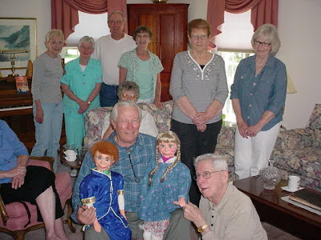

Role models?!
5/21/2009
{kind=link}

From Joe RadleTammy made he debut at a lovely home in Bedford, Virginia, yesterday where a lovely luncheon was held in her honor. Many friends attended her coming out party. Just a few of the folks that came out to wish her well are pictured. There were considerably more but we couldn't fit them all in the picture.
There were the normal questions, of course, like: "Where did you come from?", "What grade are you in?", and small talk and banter. However, Tammy began pulling their leg when they asked her what she wanted to be when she grows up. She had them going for awhile, telling them, with a straight face, that she wanted to be an "Executioner! "
She went on to explain that not a lot of folks were applying for such jobs, and the pay was good, and there was a lot of time off. She told the crowd that Tyrone had built her a miniature electric chair and a guillotine, and she had been practicing her knots from the Girl Scout manual, for when hangings would be required. She had them convinced, I think, that she was serious.
These two were acting more like the children from the Adams' Family rather than cute little role model children. They both finally told everyone they were just kidding and everyone had a good laugh.